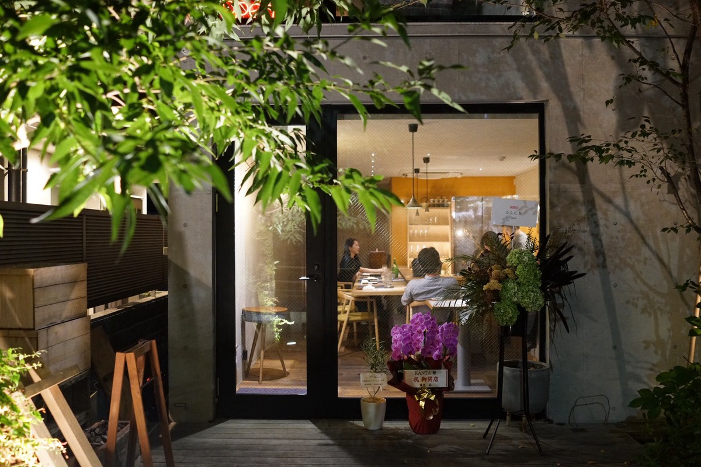
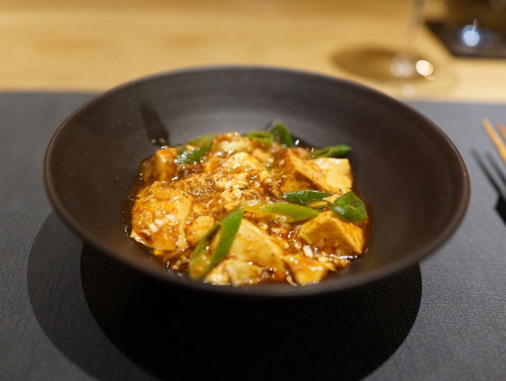
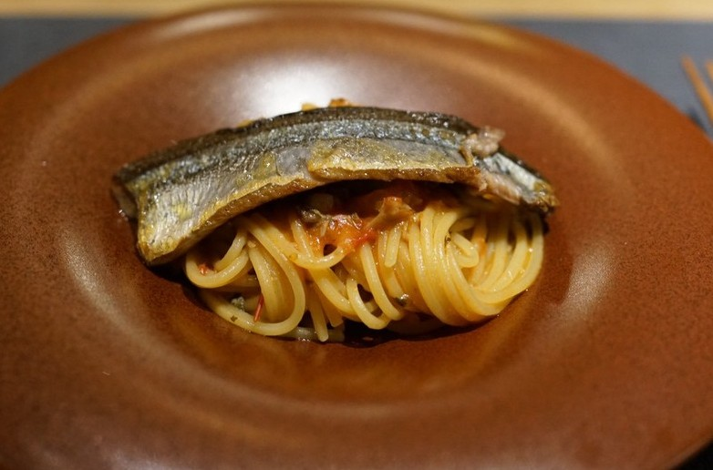
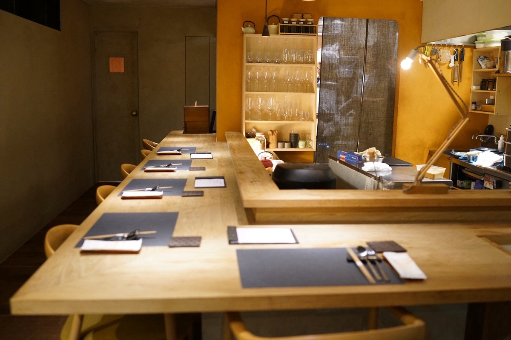

世田谷の静寂に佇む、
美食の隠れ家
東急世田谷線の閑静な住宅街に佇む、カウンター6席の隠れ家。
店主は京都での3年を皮切りに、日本を代表するフレンチで6年、独創的な中国料理の旗手のもとで2年、さらに池尻大橋や西麻布の第一線で腕を磨き、独立へと至りました。
和・洋・中の技法を自在に操る確かな系譜を礎に、自身のルーツである鹿児島の滋味豊かな食材を織り交ぜ、ジャンルを超越した「心も身体も満たされる料理」を追求。
一流の技術を惜しみなく注ぎ込みながらも、リラックスして美食を愉しめる世田谷の新たな拠点として、皆様に驚きと幸福感に満ちたひとときをお届けいたします。
ご予約・お問い合わせ
平日：19:00〜23:00 / 土日祝：18:00〜23:00
定休日：月曜日・不定休
こだわりの
食材と技術
季節ごとに変わる、最高の素材だけを。

唯一無二のクロスオーバー料理
和食、フレンチ、中華の最高峰で培った10年超の確かな技術を融合。
ジャンルを超越した自由な発想で、地元の厳選素材を「最高に美味しい一皿」へと昇華させます。

心ゆくまで堪能できる「締め」の醍醐味
美食家を飽きさせない圧倒的な満足感が魅力。
コースの最後を飾る3種の炭水化物は、ゲストが自ら分量を選べるスタイルで、心身ともに満たされる食体験を約束します。

五感を刺激する、温かな特等席
わずか6席のカウンター越しに繰り広げられる、シェフの鮮やかな職人技。
一流の洗練を纏いながらも、会話が弾む和やかな空気の中で、至福のひとときを過ごせます。
お客様の声
皆様からいただいた温かいお声を
一部ご紹介します
松陰神社前の路地にひっそり佇む、カウンター中心の「うまいもん屋」。
NARISAWAやわさで研鑽を積んだ若きシェフが、和・洋・中のがを超えた“わんぱくガストロノミー”をおまかせコースで繰り出します。
鹿児島をはじめとした旬食材を豪快かつ繊細に料理し、パスタやメのご飯ものまで、ジャンルレスな一皿一皿に遊び心と技術が共存。
ライブ感のあるキッチンと温かな接客に包まれながら、しっかり食べてしっかり満たされる、世田谷の新たな名店！！
わさやNARISAWAで修行したシェフの中華。
中華といってもパスタも出るし鶏飯も出る。
そう、ここは中華がベースだが、ジャンルレスでいろんな料理が出てきます。
そのどれもが手が込んでいて美味しい。
大きなシェフが繊細な仕事をしています。
10月にオープンしてから既に予約困難店となっているKANTAさん。
連れてきていただきました。
コース16,500円。
このお値段でこの内容は凄すぎます。
どれも本当に美味しくて、お腹いっぱいになりすぎる幸せ。
またすぐに伺いたいお店です！！
ご予約・アクセス
住所
〒154-0017
東京都世田谷区世田谷４丁目６−１２
松陰スクエア １Ｆ Ａ
営業時間
平日：19:00〜23:00
土日祝：18:00〜23:00
定休日
月曜日・不定休
支払い方法
現金可、クレジットカード可